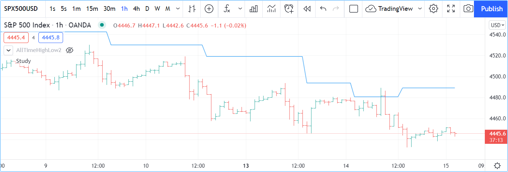

Operators¶
Introduction¶
Some operators are used to build expressions returning a result:
- Arithmetic operators
- Comparison operators
- Logical operators
- The ?: ternary operator
- The [] history-referencing operator
Other operators are used to assign values to variables:
=is used to assign a value to a variable, but only when you declare the variable (the first time you use it):=is used to assign a value to a previously declared variable. The following operators can also be used in such a way:+=,-=,*=,/=,%=
As is explained in the Type system page, forms and types play a critical role in determining the type of results that expressions yield.
This, in turn, has an impact on how and with what functions you will be allowed to use those results.
Expressions always return a form of the strongest one used in the expression, e.g., if you multiply an “input int” with a “series int”,
the expression will produce a “series int” result, which you will not be able to use as the argument to length in
ta.ema().
This script will produce a compilation error:
//@version=5
indicator("")
lenInput = input.int(14, "Length")
factor = year > 2020 ? 3 : 1
adjustedLength = lenInput * factor
ma = ta.ema(close, adjustedLength) // Compilation error!
plot(ma)
The compiler will complain: Cannot call ‘ta.ema’ with argument ‘length’=’adjustedLength’. An argument of ‘series int’ type was used but a ‘simple int’ is expected;.
This is happening because lenInput is an “input int” but factor is a “series int” (it can only be determined by looking at the value of
year on each bar).
The adjustedLength variable is thus assigned a “series int” value.
Our problem is that the Reference Manual entry for ta.ema() tells us that its length parameter requires values of “simple” form, which is a weaker form that “series”, so a “series int” value is not allowed.
The solution to our conundrum requires:
- Using another moving average function that supports a “series int” length, such as ta.sma(), or
- Not using a calculation producing a “series int” value for our length.
Arithmetic operators¶
There are five arithmetic operators in Pine Script®:
+ |
Addition and string concatenation |
- |
Subtraction |
* |
Multiplication |
/ |
Division |
% |
Modulo (remainder after division) |
The arithmetic operators above are all binary (means they need two operands — or values — to work on, like in 1 + 2).
The + and - also serve as unary operators (means they work on one operand, like -1 or +1).
If both operands are numbers but at least one of these is of float type, the result will also be a float. If both operands are of int type, the result will also be an int. If at least one operand is na, the result is also na.
The + operator also serves as the concatenation operator for strings. "EUR"+"USD" yields the "EURUSD" string.
The % operator calculates the modulo by rounding down the quotient to the lowest possible value.
Here is an easy example that helps illustrate how the modulo is calculated behind the scenes:
//@version=5
indicator("Modulo function")
modulo(series int a, series int b) =>
a - b * math.floor(nz(a/b))
plot(modulo(-1, 100))
Comparison operators¶
There are six comparison operators in Pine Script®:
< |
Less Than |
<= |
Less Than or Equal To |
!= |
Not Equal |
== |
Equal |
> |
Greater Than |
>= |
Greater Than or Equal To |
Comparison operations are binary. If both operands have a numerical value, the result will be of type bool, i.e., true, false or
na.
Examples
1 > 2 // false
1 != 1 // false
close >= open // Depends on values of `close` and `open`
Logical operators¶
There are three logical operators in Pine Script®:
not |
Negation |
and |
Logical Conjunction |
or |
Logical Disjunction |
The operator not is unary. When applied to a true, operand the result will be false, and vice versa.
and operator truth table:
| a | b | a and b |
|---|---|---|
| true | true | true |
| true | false | false |
| false | true | false |
| false | false | false |
or operator truth table:
| a | b | a or b |
|---|---|---|
| true | true | true |
| true | false | true |
| false | true | true |
| false | false | false |
`?:` ternary operator¶
The ?: ternary operator is used to create expressions of the form:
condition ? valueWhenConditionIsTrue : valueWhenConditionIsFalse
The ternary operator returns a result that depends on the value of condition. If it is true, then valueWhenConditionIsTrue is returned.
If condition is false or na, then valueWhenConditionIsFalse is returned.
A combination of ternary expressions can be used to achieve the same effect as a switch structure, e.g.:
timeframe.isintraday ? color.red : timeframe.isdaily ? color.green : timeframe.ismonthly ? color.blue : na
The example is calculated from left to right:
- If timeframe.isintraday is
true, thencolor.redis returned. If it isfalse, then timeframe.isdaily is evaluated. - If timeframe.isdaily is
true, thencolor.greenis returned. If it isfalse, then timeframe.ismonthly is evaluated. - If timeframe.ismonthly is
true, thencolor.blueis returned, otherwise na is returned.
Note that the return values on each side of the : are expressions — not local blocks, so they will not affect the limit of 500 local blocks per scope.
`[ ]` history-referencing operator¶
It is possible to refer to past values of time series using the [] history-referencing operator. Past values are values a variable had on bars preceding the bar where the script is currently executing — the current bar. See the Execution model page for more information about the way scripts are executed on bars.
The [] operator is used after a variable, expression or function call.
The value used inside the square brackets of the operator is the offset in the past we want to refer to.
To refer to the value of the volume
built-in variable two bars away from the current bar, one would use volume[2].
Because series grow dynamically, as the script moves on sucessive bars, the offset used with the operator will refer to different bars.
Let’s see how the value returned by the same offset is dynamic, and why series are very different from arrays.
In Pine Script®, the close variable, or close[0] which is equivalent,
holds the value of the current bar’s “close”.
If your code is now executing on the third bar of the dataset (the set of all bars on your chart), close will contain the price at the close of that bar,
close[1] will contain the price at the close of the preceding bar (the dataset’s second bar),
and close[2], the first bar. close[3] will return na
because no bar exists in that position, and thus its value is not available.
When the same code is executed on the next bar, the fourth in the dataset,
close will now contain the closing price of that bar, and the same close[1]
used in your code will now refer to the “close” of the third bar in the dataset.
The close of the first bar in the dataset will now be close[3],
and this time close[4] will return na.
In the Pine Script® runtime environment, as your code is executed once for each historical bar in the dataset, starting from the left of the chart, Pine Script® is adding a new element in the series at index 0 and pushing the pre-existing elements in the series one index further away. Arrays, in comparison, can have constant or variable sizes, and their content or indexing structure is not modified by the runtime environment. Pine Script® series are thus very different from arrays and only share familiarity with them through their indexing syntax.
When the market for the chart’s symbol is open and the script is executing on the chart’s last bar, the realtime bar, close returns the value of the current price. It will only contain the actual closing price of the realtime bar the last time the script is executed on that bar, when it closes.
Pine Script® has a variable that contains the number of the bar the script is executing on: bar_index. On the first bar, bar_index is equal to 0 and it increases by 1 on each successive bar the script executes on. On the last bar, bar_index is equal to the number of bars in the dataset minus one.
There is another important consideration to keep in mind when using the [] operator in
Pine Script®. We have seen cases when a history reference may return the na
value. na represents a value which is not a number and
using it in any expression will produce a result that is also na (similar
to NaN).
Such cases often happen during the script’s calculations in the
early bars of the dataset, but can also occur in later bars under certain conditions.
If your code does not explicitly provide for handling these special cases,
they can introduce invalid results in your script’s calculations
which can ripple through all the way to the realtime bar.
The na and
nz functions
are designed to allow for handling such cases.
These are all valid uses of the [] operator:
high[10]
ta.sma(close, 10)[1]
ta.highest(high, 10)[20]
close > nz(close[1], open)
Note that the [] operator can only be used once on the same value. This is not allowed:
close[1][2] // Error: incorrect use of [] operator
Operator precedence¶
The order of calculations is determined by the operators’ precedence. Operators with greater precedence are calculated first. Below is a list of operators sorted by decreasing precedence:
| Precedence | Operator |
|---|---|
| 9 | [] |
| 8 | unary +, unary -, not |
| 7 | *, /, % |
| 6 | +, - |
| 5 | >, <, >=, <= |
| 4 | ==, != |
| 3 | and |
| 2 | or |
| 1 | ?: |
If in one expression there are several operators with the same precedence, then they are calculated left to right.
If the expression must be calculated in a different order than precedence would dictate, then parts of the expression can be grouped together with parentheses.
`=` assignement operator¶
The = operator is used to assign a variable when it is initialized — or declared —, i.e., the first time you use it.
It says this is a new variable that I will be using, and I want it to start on each bar with this value.
These are all valid variable declarations:
i = 1
MS_IN_ONE_MINUTE = 1000 * 60
showPlotInput = input.bool(true, "Show plots")
pHi = pivothigh(5, 5)
plotColor = color.green
See the Variable declarations page for more information on how to declare variables.
`:=` reassignement operator¶
The := is used to reassign a value to an existing variable.
It says use this variable that was declared earlier in my script, and give it a new value.
Variables which have been first declared, then reassigned using :=, are called mutable variables.
All the following examples are valid variable reassignments.
You will find more information on how var works in
the section on the `var` declaration mode:
//@version=5
indicator("", "", true)
// Declare `pHi` and initilize it on the first bar only.
var float pHi = na
// Reassign a value to `pHi`
pHi := nz(ta.pivothigh(5, 5), pHi)
plot(pHi)
Note that:
- We declare
pHiwith this code:var float pHi = na. The var keyword tells Pine Script® that we only want that variable initialized with na on the dataset’s first bar. Thefloatkeyword tells the compiler we are declaring a variable of type “float”. This is necessary because, contrary to most cases, the compiler cannot automatically determine the type of the value on the right side of the=sign. - While the variable declaration will only be executed on the first bar because it uses var,
the
pHi := nz(ta.pivothigh(5, 5), pHi)line will be executed on all the chart’s bars. On each bar, it evaluates if the pivothigh() call returns na because that is what the function does when it hasn’t found a new pivot. The nz() function is the one doing the “checking for na” part. When its first argument (ta.pivothigh(5, 5)) is na, it returns the second argument (pHi) instead of the first. When pivothigh() returns the price point of a newly found pivot, that value is assigned topHi. When it returns na because no new pivot was found, we assign the previous value ofpHito itself, in effect preserving its previous value.
The output of our script looks like this:
Note that:
- The line preserves its previous value until a new pivot is found.
- Pivots are detected five bars after the pivot actually occurs because our
ta.pivothigh(5, 5)call says that we require five lower highs on both sides of a high point for it to be detected as a pivot.
See the Variable reassignment section for more information on how to reassign values to variables.